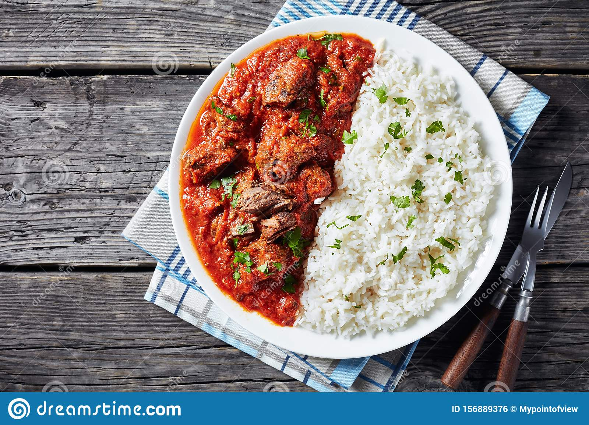

Rice and Stew

Descrtiption
Rice and Stew' is one of the most popular dishes in Nigeria. It is as simple as rice and stew but garnishing
makes this dish more interesting .
Ingredients
- 3 cups of White Rice
- 1tsp salt for the rice
- Salt
- 3 cups of Stock
- 4 cups blended Tomatoes
- Chilli pepper to taste
- 1 cup Vegetable Oil
Steps
- Boil the rice with salt until is cooked and dry
- Season meat properly to get the stock.
- When it is cooked, you could fry or grill the meat if you like
- Pour the vegetable oil into a pot and place on heat
- Throw in the chopped onions when the oil is hot
- Pour the blended tomatoes into the pot and allow to cook for about 10mins
- Pour in the stock and cook further
- Add the seasoning cube, ginger, crushed garlic, curry and thyme
- Cook for another 20mins
- Add the meat and salt to taste